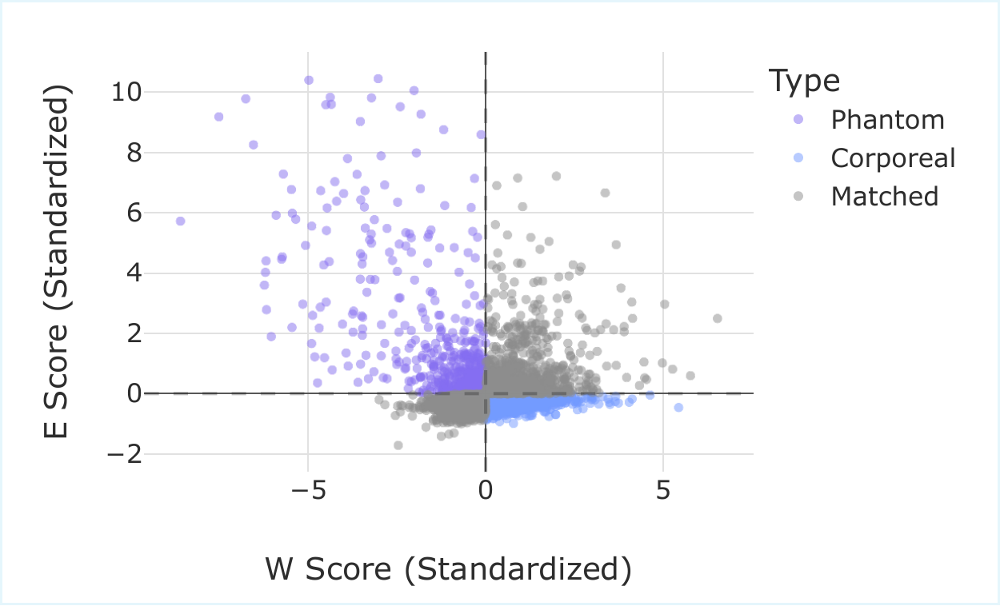
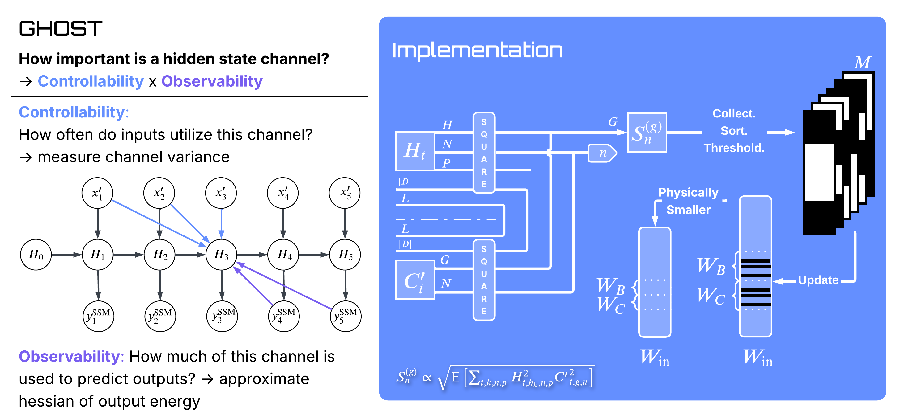
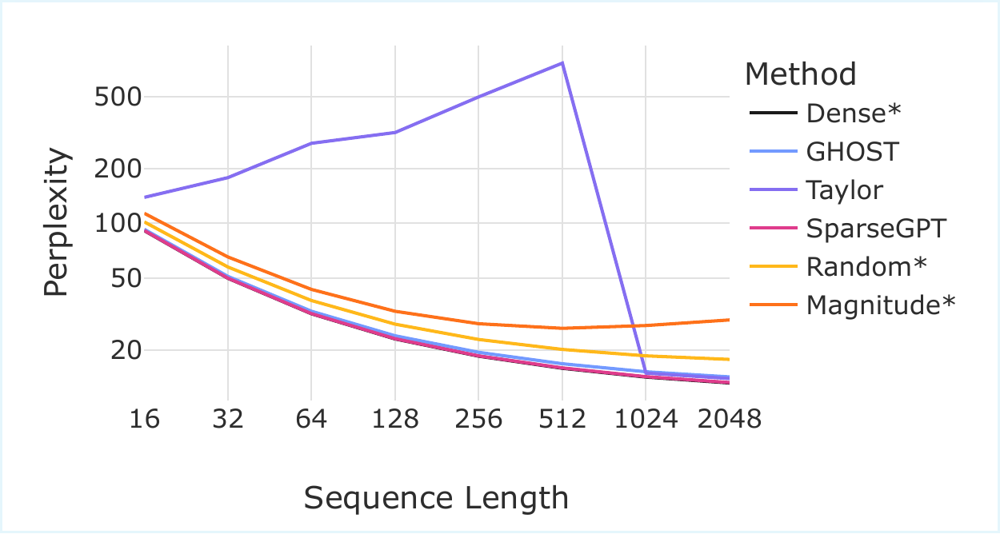
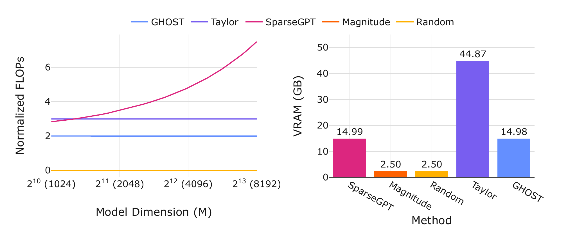

Most of today's headline AI — ChatGPT, Claude, Gemini, the open-weights LLaMA and Qwen models — is built on the transformer. A transformer reads a sequence of tokens by, at every step of generation, looking back at every previous token. That's mathematically elegant and trains beautifully at scale; it's also expensive at inference time. Generating the $n$-th token costs work proportional to $n$, and the per-token "KV cache" the model has to keep around grows linearly with context length too. For long contexts — legal documents, codebases, hundreds of thousands of tokens — that quadratic cost is what stops a transformer from being practical.
A separate line of work bets differently. State-space models carry a fixed-size internal "state" that updates as the model reads, recurrent-network style. Done right, they give constant-memory and linear-time sequence processing. The leading recent design — Mamba, and its successor Mamba2 — is competitive with transformers on language modelling quality while keeping that recurrence advantage. It's the kind of architecture that matters most when context windows stretch into the hundreds of thousands of tokens, where the transformer's cost starts to bite.
Mamba2 inherited one practical headache from its own design choices. To improve quality, the authors expanded the size of the internal state by a factor of eight over Mamba1: the state-space dimension $N$ went from 16 to 128. For a 1.3-billion-parameter model, that pushed the recurrent state from about 12 MB to roughly 100 MB. The weights themselves sit in GPU memory once and are fine. The recurrent state, by contrast, has to be re-read for every generated token, and 100 MB of traffic per token is enough to saturate a modern GPU's memory bandwidth and slow autoregressive decoding to a crawl.
The natural response is to prune the state — keep the channels that matter, drop the ones that don't, and hope quality holds. The catch is that the standard pruning toolkit was developed for transformer weights, and it doesn't transfer cleanly to Mamba2's recurrent state. Each existing tool brings its own tradeoff:
Unstructured weight pruners (SparseGPT, Wanda) zero out individual weights but leave activations dense. The recurrent state $H_t$ stays fully populated; bandwidth doesn't drop. Magnitude pruning looks at the input/output projection weights $W_B,W_C$ and asks which channels have small norms. As we'll show, the static norm and the runtime energy turn out to be different signals; magnitude has a structural blind spot. Gradient-based pruning (Taylor scoring) is more accurate at moderate sparsity but needs to backprop through the whole graph — that's 45+ GB of VRAM for a 1.3B model, beyond an A100 40 GB. At higher sparsity and on smaller models, the one-shot scoring also runs into the masked-distribution-shift issue: upstream pruning lands first, and the downstream gradients no longer reflect the active model.
We wanted something with magnitude pruning's price tag, gradient-method-level fidelity at moderate sparsity, graceful behaviour at high sparsity, and an honest answer in regimes where any single proxy will struggle. We called it GHOST — Grouped Hidden-state Output-aware Selection and Truncation.
Phantoms and corporeals
A Mamba2 hidden state is a coordinate in a recurrent memory bank. Each of Mamba2-1.3B's 6,144 hidden states ($48$ layers $\times$ $128$ states each) is fed by a row of $W_B$ and read out by a column of $W_C$. The natural — and naive — importance proxy is the product of those two weight norms.
We plotted that static score against the channel's dynamic energy across a calibration corpus, standardized both axes, and looked at the Pearson correlation. It's $-0.19$. Roughly uncorrelated, leaning slightly the wrong way — not anti-correlated enough for a clean inversion to fix it.

Two channel populations, two new vocabulary words. Phantom states — high activity, low weight norm. Corporeal states — large weights, low utilisation. At 50% sparsity, the static rank and the runtime rank diverge for 41.3% of channels, almost evenly split between the two populations (20.66% phantoms + 20.64% corporeals). Anything that picks channels by static norm alone is missing one of the two energies that determine actual contribution.
Static weight norm and runtime channel energy are different signals. The phantom/corporeal distinction is the visible shape of that gap.
The control-theory side door
There's a forty-year-old idea from system identification called balanced truncation (Moore, 1981). For a linear time-invariant system, you measure two things: how strongly the input drives each internal state (controllability), and how strongly each state drives the output (observability). The product of those two quantities — the Hankel singular values — ranks the states by how much they actually contribute to the input–output behaviour, and truncating the lowest of them is provably the best low-order approximation in operator norm.
Mamba2 is not linear time-invariant. The recurrence is input-dependent (selective), which is why — in the orthodoxy — closed-form balanced truncation doesn't apply. We argue the principle still does, with one substitution: instead of solving a Lyapunov equation for the Gramians, estimate them from a calibration corpus.
For a state channel $n$ in group $g$, define two empirical scalars at each timestep: the squared hidden-state value $P^{(g)}_{k,n,p}(t) = (H_{t,h_k,n,p})^2$ (controllability proxy — how excited is this channel?) and the squared output projection $Q^{(g)}_{n}(t) = (C'_{t,g,n})^2$ (observability proxy — how loudly will it speak to the output?). GHOST's saliency is their average product, square-rooted to recover the dimensionality of a singular value:
There's a second, independent reading of the same expression: it's exactly the local mean-squared error you'd incur from setting that channel to zero. The control-theoretic interpretation (balanced truncation) and the loss-preservation interpretation (local MSE) arrive at the same scoring rule from different starting points. That equivalence is also what corrected an earlier prototype: an initial implementation took the average controllability and the average observability and only multiplied at the end, which loses the cross-correlation. The paper-faithful score — named ghost2 in the repo — does the multiplication per sample, then averages, which is what the local-MSE derivation actually wants.

Two operational details matter. First, GHOST pools across GQA groups within a layer before thresholding — complex groups end up keeping more channels, redundant ones less. No per-layer rate has to be tuned by hand. Second, GHOST runs sequentially down the model, recalibrating each layer's activations after pruning the previous one. That mitigates the masked-distribution-shift issue that one-shot gradient methods see at high sparsity: the layer underneath has changed, so the score should change too.
The numbers
| Method | 10% | 30% | 50% | 70% | 90% |
|---|---|---|---|---|---|
| SparseGPT* | 13.17 | 13.19 | 13.25 | 13.52 | 15.51 |
| Magnitude | 427.7 | 22.39 | 29.34 | 39.96 | 69.49 |
| Random | 13.52 | 15.04 | 17.77 | 30.14 | 64.21 |
| Taylor | 13.18 | 13.26 | 13.94 | 4255 | 4690 |
| GHOST | 13.24 | 13.51 | 14.23 | 16.16 | 25.07 |
*SparseGPT is unstructured — an optimistic reference, not a structured peer; it can re-optimise remaining weights to recover, which structured pruners cannot.
At 50% sparsity Taylor wins on perplexity by about 0.3 points. At 70% sparsity Taylor's one-shot scoring runs into the masked-distribution-shift problem — upstream pruning has changed the state distribution before the downstream gradients are computed — and GHOST's sequential recalibration is what stays usable. Both methods are in their natural operating regime up to about 50%; past that, GHOST is the curve that holds.
Length generalisation
Calibrate at $L_{\text{cal}}=128$ tokens, evaluate up to $L_{\text{eval}}=2048$. The dense model and SparseGPT both improve with longer context (more bits available). Magnitude and Random degrade gracefully. Taylor's perplexity climbs to 1613 at $L_{\text{eval}}=2048$ — gradient-based scores computed on short contexts seem not to transfer to long-range dependencies. GHOST's score, being closer to a per-channel energy budget, transfers across context lengths and tracks the dense baseline.

Scaling
Five model sizes, 130M to 2.7B, all at 50% sparsity. Smaller models have less representational redundancy, so any pruning method bites harder. GHOST is the only structured method we tested that stays usable across the entire range; Taylor recovers nicely on the 1.3B and 2.7B models where gradient signals are more stable, but is unusable on the 130M and 370M ends:
| Method | 130M | 370M | 780M | 1.3B | 2.7B |
|---|---|---|---|---|---|
| Dense | 25.85 | 18.13 | 14.97 | 13.17 | 11.46 |
| Magnitude | 910.0 | 120.3 | 30.57 | 29.34 | 20.04 |
| Random | 45.60 | 23.71 | 5197 | 17.77 | 15.93 |
| Taylor | 1016 | 12647 | 15.13 | 13.94 | 11.50 |
| GHOST | 29.06 | 19.96 | 16.13 | 14.23 | 12.14 |
Memory and compute
Per the paper's complexity analysis: GHOST scales linearly in input dimension $M$, where SparseGPT scales quadratically. Calibration time on Mamba2-1.3B is about 8 minutes for either GHOST or Taylor (both make two passes over 128 calibration samples). The difference is peak VRAM — roughly 15 GB for GHOST, 45+ GB for Taylor. That puts GHOST inside a single 16 GB consumer GPU's budget; Taylor needs an 80 GB card.

Out-of-distribution behaviour
A separate question: do the channels GHOST keeps look like English-text channels, or like Mamba2 channels? We calibrated on WikiText-2 (English text) and tested zero-shot on code (HumanEval) and math (MMLU Elementary Mathematics). On code, GHOST's pass@1 is 5.49% — matching SparseGPT and ahead of Taylor's 4.88%, with the dense baseline at 6.71%. On the math benchmark, GHOST scores 25.66% — tied with Magnitude (which is otherwise the worst structured method on text) and ahead of both Taylor (22.49%) and the dense baseline (21.43%). Among structured methods, GHOST has the smallest in-domain–to–out-of-domain gap.
The reading we offer is conservative: GHOST tends to keep channels that are intrinsic to Mamba2's operation rather than channels that happen to encode English-text distributions. The Magnitude tie on math is a useful caution — small benchmarks can flip in surprising ways, and a single number from one OOD task is not the same as broad OOD generalisation.
What we don't claim
Four limitations the paper states plainly, and we won't soft-pedal here.
Limitation 1 · Extreme sparsity
At 90%, GHOST degrades.
Perplexity climbs to 25 from a dense 13.17. The elbow plot in the appendix shows that 90% sparsity forces removal of highly utilised states — states that pass GHOST's controllability test. There is no scoring rule that survives a budget that small. We report the number anyway.
Limitation 2 · Small models
130M models suffer harder.
Mamba2-130M goes from 25.85 dense to 29.06 pruned at 50% — a 12% relative perplexity hit, versus 8% for the 1.3B model. Less representational redundancy, less room to give up. Pruning gets easier as you scale up; on toy models it is genuinely costly.
Limitation 3 · Exact recall
Lambada drops 14 points.
Compressing recurrent state limits exact-match retrieval — you can't memorise as many specific facts in less memory. We see a 14-point Lambada accuracy drop at 50% sparsity. Aggregate zero-shot performance stays within 2.5 points of the dense baseline, but the trade-off is real and is the reason we wouldn't use GHOST naively for retrieval-heavy applications.
Limitation 4 · Architecture-specific
This is a Mamba2 result.
GHOST exploits Mamba2's scalar-identity $A$ and grouped-query (GQA) structure. The same control-theoretic principle should apply to S4, H3, Mamba1, hybrid Jamba-style models — but the specific Gramian approximations have to be re-derived. Drop-in transfer is not promised. We do show one transfer experiment in the paper: Zamba2, a Mamba2 + Transformer hybrid, where GHOST continues to work.
What this is really about
The narrow win is a state pruner for Mamba2 that lets a 1.3-billion-parameter model fit on the kind of GPU sitting in academic labs, not just industrial clouds. The broader bet is that forward-only Gramian estimation is a general principle for identifying functionally-important channels in deep networks — a direction we expect to pursue beyond Mamba2.
The technical equivalence we keep returning to is the one that earned ghost2 its name. The same scoring rule arrives from two different places: a control-theoretic argument (balanced truncation, Hankel singular values) and a loss-preservation argument (the local MSE you'd incur from zeroing a channel). When a heuristic admits two independent derivations, that's usually a signal worth following.
Minimising the GHOST saliency is, term-for-term, minimising the expected local mean-squared error.
Code, configs, and 22 SLURM scripts that reproduce every paper figure are at github.com/Menezmic21/mamba2_ghost. The supported compressors are ghost2 (the paper-faithful implementation, with is_hard: true/false for hard or soft pruning) and ghost (the legacy implementation that motivated ghost2). Structured baselines: magnitude, random, taylor. Unstructured optimistic-comparison anchor: sparsegpt. wanda and mamba_shedder wrappers are present but only lightly supported. Pull, run, swap baselines via Hydra overrides, file issues.
Joint work
Joint work with Michael Menezes at Rice. Accepted at ICML 2026.
Citation
@inproceedings{menezes2026ghost,
title = {{GHOST}: Grouped Hidden-state Output-aware Selection and Truncation},
author = {Menezes, Michael and Kyrillidis, Anastasios},
booktitle = {Proceedings of the International Conference on Machine Learning (ICML)},
year = {2026}
}